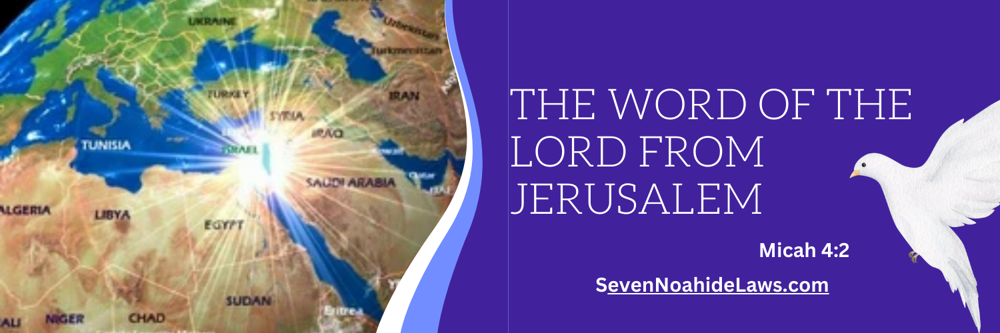

HAPPY NOAHIDE NEW YEAR 2026
A New Beginning for Humanity
What were you curious about as a kid?
For me, it was dinosaurs.
Especially after I was taken to a science display that featured a massive five-story, 50-foot-plus dinosaur skeleton.
Impactful. Impressive. And old.
How old?
Maybe 150 million years old.
Older than anything I knew at the time.
Then I learned that our Earth was even older: about 4.5 billion years old.
And that we Homo sapiens appeared about 300,000 years ago.
Shortly after these out-of-this-world revelations, I became very confused.
I had come across a calendar claiming the whole world was just under 6,000 years old.
Even as a kid, I knew that 6,000 years is a lot less than 150 million years or 4.5 billion years.
What was the right answer?
Science I had seen with my own eyes—or a religious calendar theory?
I trusted my own perception, trusted the science, and rejected that claim and most religious ideas.
Much later in life, I came to understand that the Earth wasn’t born 5,787 years ago.
Something else was.
According to the biblical story, something new entered human history:
moral responsibility.
We know them as Adam and Eve.
Jewish tradition even gives that moment an anniversary: Rosh Hashanah.
We can understand Rosh Hashanah as an anniversary of human responsibility.
Not principally as the birthday of a 4.54-billion-year-old planet, but as the birthday of the human moral story—the moment Adam and Eve became morally accountable beings.
There are two clocks.
Science dates the physical world.
Biblical chronology dates moral agency.
Happy Birthday, Humanity
How old are we?
Earth: approximately 4.54 billion years.
Homo sapiens: approximately 300,000 years.
Biblical human history: approximately 6,000 years.
They may be answering different questions.
Science asks when the physical human creature appeared.
Genesis asks when humanity became morally answerable.
Before Adam and Eve there was human intelligence and culture.
Afterward came conscience, covenant, exile, and the possibility of return.
One answer is scientific.
The other is spiritual.
Before Noah, There Was Adam
Jewish tradition teaches that Adam received six foundational obligations; after the Flood, Noah received the seventh.
Before there were nations, denominations, churches, mosques, or synagogues, there was a human being—and a question:
What does God expect of us?
Jewish tradition identifies seven universal obligations for humanity:
- No idolatry
- No cursing God
- Don’t murder
- No illicit relationships
- Don’t steal
- No cruelty to animals
- Uphold justice
In everyday language:
a moral foundation for being a good human being.
You Don’t Have to Fit into Any One Religion to Walk with God
Look around the world and we find thousands of religions, denominations, traditions, and ways of seeking God.
Not all religions are the same.
But we don’t all have to be the same to share a moral foundation.
Different identities can and should thrive.
Difference does not require hatred.
You don’t have to fit into any one religion to walk with God.
Jewish return to Jewish observance and the Noahide path for the nations are distinct.
The Noahide path is not “junior Judaism.”
It is not a conversion funnel.
It is a universal path for humanity.
Something Is Stirring
In Israel especially, ancient words are finding a new voice.
Psalms.
Prayer.
Faith.
Identity.
Open talk about God.
These things are moving again through popular culture.
The prophets envisioned spiritual light moving outward from Jerusalem toward the nations—not to make every nation the same, but toward a world of God, justice, and peace.
“For out of Zion shall go forth the law, and the word of the LORD from Jerusalem.” — Micah 4:2

Are we seeing the beginnings of something?
We don’t pretend to know.
But it is worth paying attention.
And far beyond Israel, people are asking old questions again.
Who am I?
Why am I here?
What does God want from me?
How should I live?
Why can’t I just be a good person?
What can I do as only one in eight billion?
And perhaps the language we need is simpler than we think.
Light.
Peace.
Faith.
Love.
Hope.
Truth.
Purpose.
Justice.
Kindness.
Gratitude.
Find it within you.
Then share it with the world.
But feeling the light is only the beginning.
The Seven Laws give that aspiration moral form.
Peace means something if human life is sacred.
Justice means something if courts must be just.
Love means something if relationships carry responsibility.
Truth means something if God and His Name matter.
Kindness reaches even to how human beings treat living creatures.
Many of us already recognize much of this moral foundation—even if we’ve never heard the words “Seven Noahide Laws.”
The words inspire us. The Seven Laws ask us to live them.
And together, we can help more people discover—and live—it.
The First New Year Wasn’t Perfect Either
Humanity’s first day wasn’t perfect.
Neither is ours.
New Year isn’t celebrating human perfection.
It’s celebrating our ability to begin again.
Today is our new beginning.
Don’t Just Believe Something. Do Something.
Practice your light daily.
Read — a Psalm.
Reflect — one honest thought about God, yourself, or another person.
Do — one act today that makes the world more consistent with the Seven.
The New Year Invitation
5,787 years later, the invitation remains.
Find the light.
Choose life.
Seek peace.
Pursue justice.
Honor God.
Treat others with dignity.
Protect what is sacred.
And when you fall—
begin again.
Happy Noahide New Year 5787.
Happy Birthday, Humanity.
A New Beginning. An Ancient Path. A Light for the World.